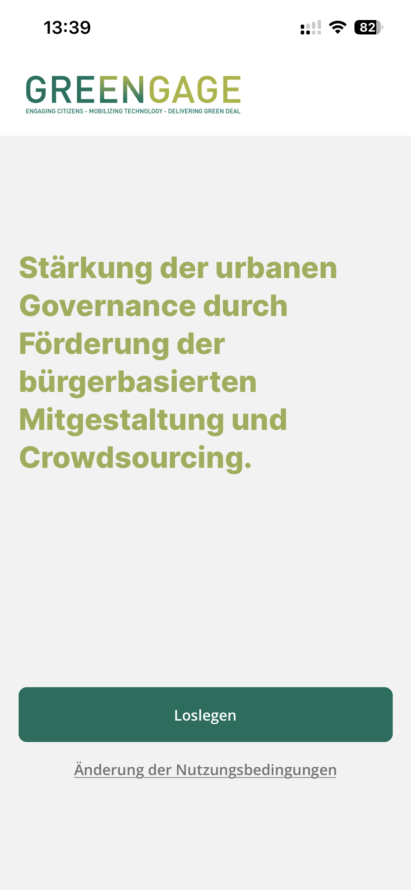
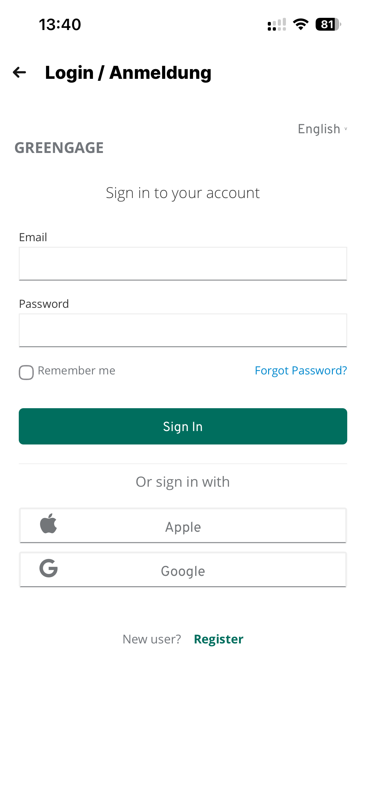
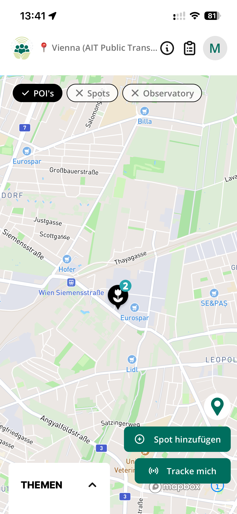
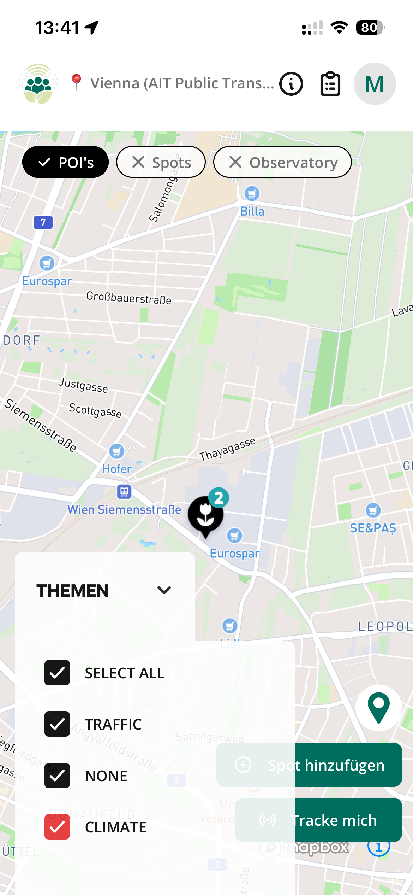
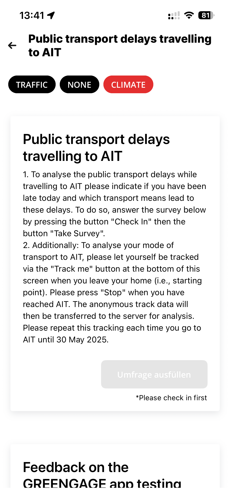
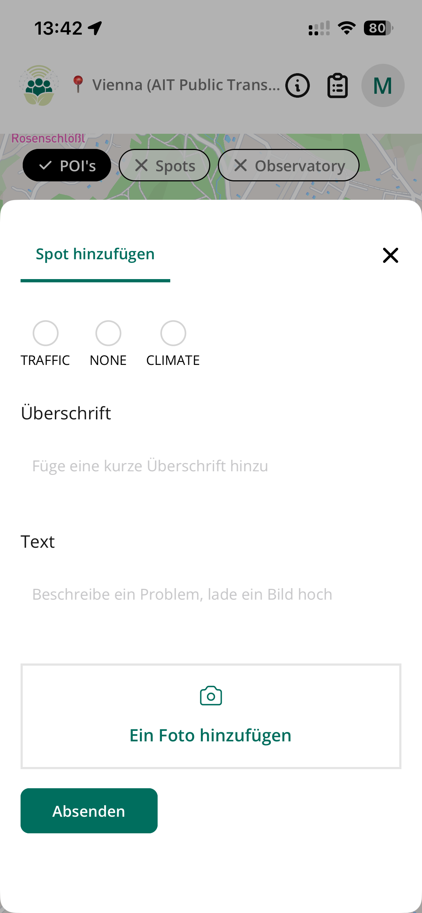
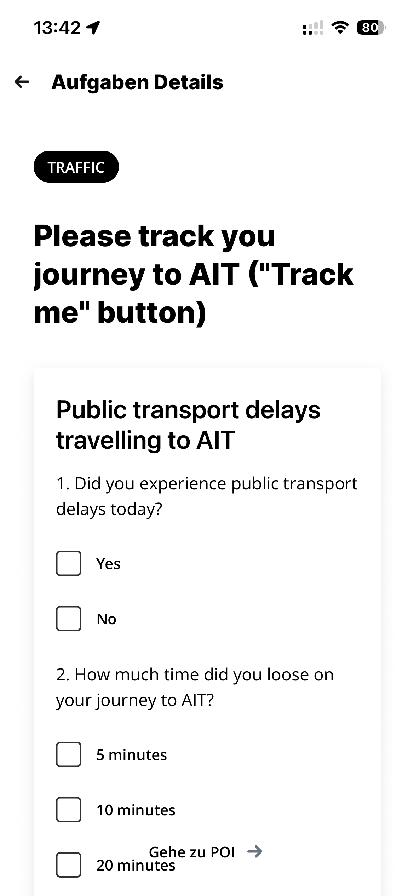
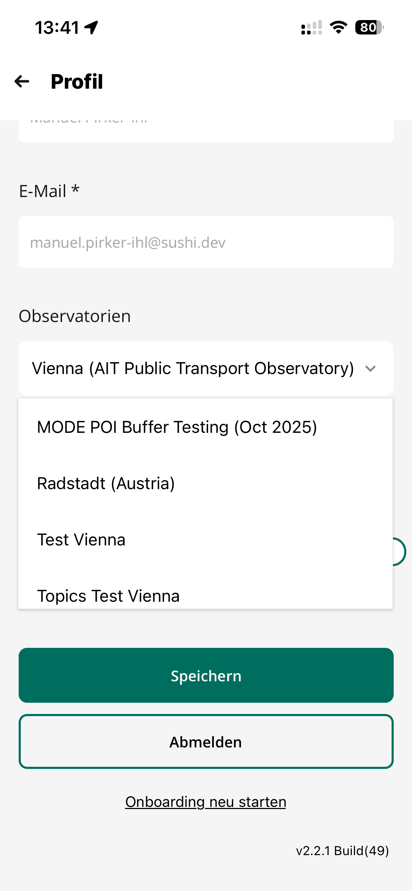

GREENGAGE App
Introduction
The GREENGAGE App is a mobile application for citizen engagement and crowdsourcing, designed to strengthen urban governance through citizen-based co-creation. The app enables citizens to participate in Citizen Observatories, report observations, track mobility patterns, and complete surveys.
Availability
The GREENGAGE App is available for both major mobile platforms:
| Platform | Status |
|---|---|
| Apple iOS | Available on App Store |
| Google Android | Available on Google Play |
Both apps can be deployed and customized for your Citizen Observatory.
Administration Console
The GREENGAGE Console at console.greengage.dev is the administration tool for managing the GREENGAGE App infrastructure.
Key highlights:
- Free to use - The SaaS platform is available at no cost
- Active development - The platform will continue to be developed beyond the project duration
- Easy setup - Create and manage Citizen Observatories within minutes
For detailed documentation on the Console, visit the GREENGAGE Console Documentation.
App Screens
Welcome Screen

The welcome screen introduces users to the GREENGAGE project mission: "Strengthening urban governance through promoting citizen-based co-creation and crowdsourcing." Users can tap "Get Started" to begin.
Login / Registration

The app supports multiple authentication methods:
- Email & Password - Traditional account login
- Apple Sign-In - Quick authentication via Apple ID
- Google Sign-In - Quick authentication via Google account
- New Registration - Create a new account directly in the app
Multi-language support is available (e.g., English, German).
Map View

The interactive map displays:
- POIs (Points of Interest) - Predefined locations relevant to the observatory
- Spots - User-reported locations
- Observatory - Current Citizen Observatory context
Key actions:
- Add Spot - Report a new observation at the current location
- Track me - Start mobility tracking for transport mode analysis
Theme Filter

Users can filter map content by themes eg.:
- TRAFFIC - Traffic-related observations
- CLIMATE - Climate and environmental observations
- NONE - Uncategorized items
- SELECT ALL - Show all themes
Themes can be defined within the console.greengage.dev for every observatory on demand.
Task Details

Tasks provide instructions for citizen participation. This example shows a public transport delay survey asking users to:
- Check in at a location
- Complete a survey about transport delays
- Track their journey using the "Track me" feature
Add Spot

Citizens can contribute observations by adding spots:
- Select a theme category (Traffic, Climate, etc.)
- Add a title for the observation
- Provide a description of the issue or observation
- Upload a photo to document the spot
Survey

Integrated surveys allow structured data collection:
- Multiple choice questions
- Yes/No questions
- Time-based selections
- Navigation to related POIs
Profile & Observatory Selection

The profile screen allows users to:
- View and edit their email address
- Switch between Observatories (e.g., Vienna, Radstadt, Test environments)
- Save changes or Sign out
- Restart the onboarding process
App version information is displayed at the bottom.
Features Overview
| Feature | Description |
|---|---|
| Multi-Observatory Support | Participate in multiple Citizen Observatories |
| Location Tracking | Track mobility patterns for transport analysis |
| Spot Reporting | Report observations with photos and descriptions |
| Surveys | Complete structured questionnaires |
| POI | Point of interest system |
| Tasks | Tasks system to interact with people |
| Theme Filtering | Filter content by categories |
| Multi-language | Support for multiple languages (EN, DE, ES, IT) |
| Social Login | Apple and Google authentication |
| MODE | Deep Integration of MODE |
| Communication | Tools to communicate with participants |
| Mission Templates | Save and reuse mission configurations |
| Mission Scheduling | Automate recurring missions |
| News & Announcements | Keep participants informed |
| Webhooks | Integrate with external systems |
Infrastructure
The GREENGAGE App is built on a modern, scalable infrastructure designed for reliability and performance.
Asset Storage - Fairu
All media assets (images, photos, documents) in the GREENGAGE App are managed by Fairu, a specialized asset management and storage solution.
Key Features:
| Feature | Description |
|---|---|
| Cloud Storage | Secure, scalable storage for all uploaded media |
| Image Processing | Automatic optimization, resizing, and format conversion |
| Blurring | Privacy protection through automatic or manual image blurring |
| NSFW Detection | Automatic detection of inappropriate content |
| CDN Delivery | Fast global content delivery |
Fairu handles all asset uploads from the mobile app, including:
- Spot photos uploaded by citizens
- Profile pictures
- Survey attachments
- Mission documentation
!!! info "Custom Fairu Integration" Observatory administrators can configure custom Fairu credentials in the Console settings for dedicated storage management.
For more information about Fairu, visit fairu.app.
API
The GREENGAGE backend provides a GraphQL API for all data operations. See the API Reference for complete documentation.
Authentication
User authentication is handled via:
- Keycloak - OAuth-based authentication for GREENGAGE Project accounts
- Native Auth - Email/password authentication for standalone accounts
- Social Login - Apple and Google sign-in via Keycloak